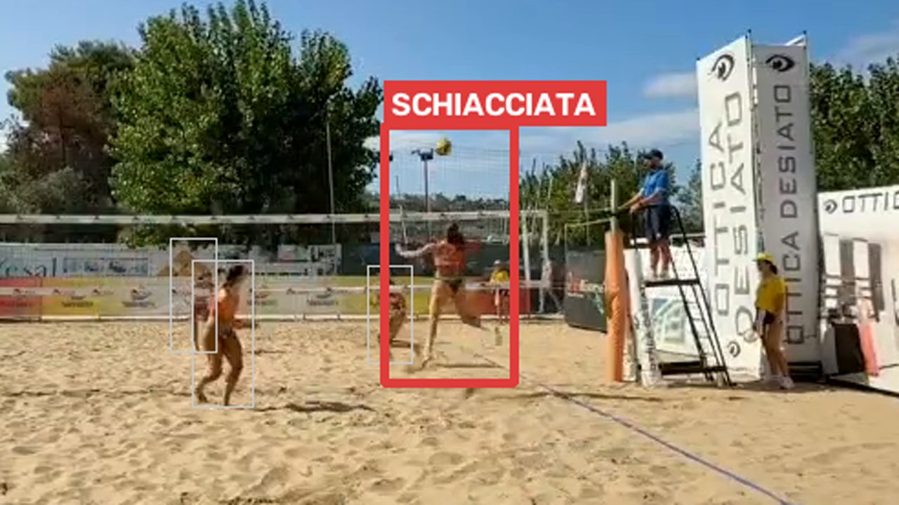

<!DOCTYPE html>
<html lang="it">
<head>
  <meta charset="UTF-8">
  <meta name="viewport" content="width=device-width, initial-scale=1.0">
  <title>Atto 3 — Quando sembrava funzionare</title>
  <link rel="preconnect" href="https://fonts.googleapis.com">
  <link rel="preconnect" href="https://fonts.gstatic.com" crossorigin>
  <link href="https://fonts.googleapis.com/css2?family=Montserrat:wght@600;700;800;900&family=Inter:wght@400;500;600;700&display=swap" rel="stylesheet">
  <script src="https://unpkg.com/react@18.3.1/umd/react.production.min.js"></script>
  <script src="https://unpkg.com/react-dom@18.3.1/umd/react-dom.production.min.js"></script>
  <script src="https://unpkg.com/@babel/standalone@7.26.10/babel.min.js"></script>
  <script>Babel.registerPreset('classic', { presets: [[Babel.availablePresets.react, { runtime: 'classic' }]] });</script>
  <style>
    :root {
      --bg: #0e1728;
      --bg-card: #16233c;
      --bg-light: #1E2E52;
      --border: #2a3a5c;
      --text: #f3f5f9;
      --text-dim: #c9d2e0;
      --text-muted: #93a0b6;
      --coral: #EF5540;
      --sun: #F6A93B;
      --teal: #1FA9A0;
      --sand: #E7C58C;
      --navy: #1E2E52;
      --success: #1FA9A0;
      --danger: #EF5540;
      --warn: #F6A93B;
      --info: #4e93b8;
      --purple: #a879c4;
      --fs-xs: clamp(13px, 0.7vw + 11px, 14px);
      --fs-sm: clamp(15px, 0.8vw + 12px, 16px);
      --fs-body: clamp(17px, 1vw + 13px, 19px);
      --fs-lead: clamp(19px, 1.3vw + 14px, 22px);
      --fs-h3: clamp(20px, 1.6vw + 14px, 26px);
      --fs-h2: clamp(26px, 2.4vw + 16px, 36px);
      --fs-h1: clamp(34px, 5vw + 18px, 58px);
      --fs-display: clamp(44px, 7vw + 20px, 84px);
      --lh-body: 1.65;
      --lh-heading: 1.18;
    }
    * { margin: 0; padding: 0; box-sizing: border-box; }
    body { background: var(--bg); color: var(--text); font-family: 'Inter', sans-serif; }
    #root { min-height: 100vh; position: relative; }
    a { color: inherit; }
    h1 { font-family: 'Montserrat', sans-serif; line-height: var(--lh-heading); }
    h2, h3 { font-family: 'Montserrat', sans-serif; line-height: var(--lh-heading); font-weight: 700; }
    h2 { font-size: var(--fs-h2); }
    h3 { font-size: var(--fs-h3); }
    p, li { line-height: var(--lh-body); }
    button { font-family: 'Inter', sans-serif; }
    .bg-texture {
      position: fixed; inset: 0; pointer-events: none; z-index: 0;
      opacity: 0.05;
      background-image: url("data:image/svg+xml,%3Csvg xmlns='http://www.w3.org/2000/svg' width='120' height='120'%3E%3Cfilter id='n'%3E%3CfeTurbulence type='fractalNoise' baseFrequency='0.9' numOctaves='2' stitchTiles='stitch'/%3E%3C/filter%3E%3Crect width='100%25' height='100%25' filter='url(%23n)'/%3E%3C/svg%3E");
    }
    .draw-surface { touch-action: none; }
    .app-shell { height: 100vh; height: 100dvh; display: flex; flex-direction: column; overflow: hidden; }
    .slide-scroll { -webkit-overflow-scrolling: touch; padding-bottom: 24px; }
    input[type=range] {
      -webkit-appearance: none; appearance: none;
      width: 100%; height: 36px; background: transparent; cursor: pointer; touch-action: none;
    }
    input[type=range]::-webkit-slider-runnable-track { height: 8px; border-radius: 4px; background: var(--border); }
    input[type=range]::-moz-range-track { height: 8px; border-radius: 4px; background: var(--border); }
    input[type=range]::-webkit-slider-thumb {
      -webkit-appearance: none; appearance: none; width: 28px; height: 28px; border-radius: 50%;
      background: var(--thumb, #ffffff); border: 3px solid #0e1728; margin-top: -10px; cursor: pointer;
    }
    input[type=range]::-moz-range-thumb {
      width: 28px; height: 28px; border-radius: 50%; background: var(--thumb, #ffffff);
      border: 3px solid #0e1728; cursor: pointer;
    }
    input[type=range]:disabled { opacity: 1; cursor: not-allowed; }
    @media (max-width: 768px) {
      .slide-content { padding: 16px !important; }
      .top-bar { padding: 0 10px !important; }
      .top-bar span { font-size: var(--fs-xs) !important; }
      .top-bar > div:first-child { gap: 8px !important; }
      .bottom-bar { gap: 8px !important; padding: 0 10px !important; }
      .bottom-bar button, .bottom-bar a { padding: 10px 14px !important; font-size: var(--fs-xs) !important; min-height: 44px; }
      svg { max-width: 100%; height: auto; }
      .sliders-grid { grid-template-columns: 1fr !important; }
      .quadrant-grid { grid-template-columns: 1fr !important; }
      .report-cards { grid-template-columns: 1fr !important; }
      .pr-bars { flex-direction: column !important; }
    }
    @media (max-width: 480px) {
      .top-bar > div:first-child span:nth-child(4) { display: none; }
    }
  </style>
</head>
<body>
  <div id="root"></div>
  <script type="text/babel" data-presets="classic">
    const { useState, useEffect, useRef, useCallback, useMemo } = React;

    /* ============================================================
       CONTRASTO — utility numerica (KB UI-CONTRAST-ACCESSIBILITY.md)
       ============================================================ */
    function relLuminance(hex) {
      const c = hex.replace('#', '');
      const r = parseInt(c.substring(0, 2), 16) / 255;
      const g = parseInt(c.substring(2, 4), 16) / 255;
      const b = parseInt(c.substring(4, 6), 16) / 255;
      const f = v => (v <= 0.03928 ? v / 12.92 : Math.pow((v + 0.055) / 1.055, 2.4));
      return 0.2126 * f(r) + 0.7152 * f(g) + 0.0722 * f(b);
    }
    function contrastRatio(l1, l2) {
      const a = Math.max(l1, l2), b = Math.min(l1, l2);
      return (a + 0.05) / (b + 0.05);
    }

    const colors = {
      bg: '#0e1728', bgCard: '#16233c', bgLight: '#1E2E52',
      // Rosso #e0563a scurito di circa il 25% (come il coral in Atto 1): accentSolid
      // #A8412C dà, con testo bianco, un contrasto verificato ≈6.1:1 (WCAG AA) — meglio
      // del ≈3.8:1 del rosso pieno originale con testo bianco, e meglio anche del ≈4.75:1
      // di testo scuro sul rosso NON scurito. Per questo qui accentSolid resta scurito e
      // SolidButton usa testo bianco (a differenza dell'Atto 2, dove l'accent chiaro
      // rendeva più conveniente il testo scuro).
      accent: '#e0563a', accentAlt: '#EC9A89', accentSolid: '#A8412C',
      text: '#f3f5f9', textDim: '#c9d2e0', textMuted: '#93a0b6',
      border: '#2a3a5c',
      coral: '#EF5540', sun: '#F6A93B', teal: '#1FA9A0', sand: '#E7C58C', navy: '#1E2E52',
      success: '#1FA9A0', danger: '#EF5540', warn: '#F6A93B', info: '#4e93b8', purple: '#a879c4'
    };
    // accentText: colore per etichette piccole in grassetto (es. "Atto 3" in eyebrow/top-bar).
    // Il rosso pieno #e0563a su sfondo scuro dà ~4.75:1 — sufficiente ma al limite per testo
    // piccolo; accentAlt (tinta più chiara, derivata mescolando l'accent al 40% verso il
    // bianco) dà invece ~6.1:1: lo usiamo ovunque il colore d'accento serva come testo
    // piccolo, tenendo l'accent pieno per titoli grandi, bordi e icone.
    const accentText = colors.accentAlt;

    function bestTextColor(bgHex) {
      const bgL = relLuminance(bgHex);
      const cWhite = contrastRatio(bgL, 1);
      const cDark = contrastRatio(bgL, relLuminance(colors.bg));
      return cWhite >= cDark ? '#ffffff' : colors.bg;
    }

    const ACT_LABEL = 'Atto 3';
    const ACT_TITLE = 'Quando sembrava funzionare';
    const PREV_ACT_HREF = 'atto2-dal-laboratorio-al-campo.html';
    const NEXT_ACT_HREF = 'atto4-il-gioco-ha-le-sue-regole.html';

    let simActive = false;

    const Box = ({ type = 'info', title, children }) => {
      const cfg = {
        info: { c: colors.info, i: 'ℹ️' },
        warn: { c: colors.warn, i: '⚠️' },
        danger: { c: colors.danger, i: '🛑' },
        tip: { c: colors.purple, i: '💡' },
        success: { c: colors.success, i: '✓' }
      };
      const { c, i } = cfg[type];
      return (
        <div style={{ background: c + '15', border: `1px solid ${c}40`, borderLeft: `4px solid ${c}`, borderRadius: '0 4px 4px 0', padding: '16px 20px', margin: '16px 0' }}>
          {title && <div style={{ display: 'flex', alignItems: 'center', gap: '8px', marginBottom: '8px', fontWeight: '700', color: c, fontSize: 'var(--fs-body)', fontFamily: "'Montserrat', sans-serif" }}>{i} {title}</div>}
          <div style={{ color: colors.textDim, lineHeight: 'var(--lh-body)', fontSize: 'var(--fs-body)' }}>{children}</div>
        </div>
      );
    };

    const Glow = ({ children, color = colors.accent }) => (
      <div style={{ position: 'relative', padding: '2px', borderRadius: '12px', background: `linear-gradient(135deg, ${color}40, transparent, ${color}20)` }}>
        <div style={{ background: colors.bgCard, borderRadius: '10px', padding: '20px' }}>{children}</div>
      </div>
    );

    const SolidButton = ({ onClick, disabled, children, bg = colors.accentSolid, style }) => {
      const textColor = bestTextColor(bg);
      return (
        <button
          onClick={onClick}
          disabled={disabled}
          style={{
            padding: '12px 26px', minHeight: '48px', border: 'none', borderRadius: '6px',
            background: disabled ? colors.bgLight : bg,
            color: disabled ? colors.textMuted : textColor,
            fontWeight: '700', fontSize: 'var(--fs-sm)', cursor: disabled ? 'not-allowed' : 'pointer',
            fontFamily: "'Montserrat', sans-serif", letterSpacing: '0.02em',
            transition: 'transform 0.15s, filter 0.15s',
            ...style
          }}
          onMouseEnter={e => { if (!disabled) e.currentTarget.style.transform = 'translateY(-2px)'; }}
          onMouseLeave={e => { e.currentTarget.style.transform = 'translateY(0)'; }}
        >{children}</button>
      );
    };

    // GhostButton: bordo e testo attivi usano accentAlt (non l'accent pieno), perché il
    // rosso pieno su sfondo scuro (bgLight, o l'overlay 25% dell'accent) resta sotto 4.5:1;
    // accentAlt invece dà ≈6:1, verificato con la stessa utility di cui sopra.
    const GhostButton = ({ onClick, disabled, active, children }) => (
      <button
        onClick={onClick}
        disabled={disabled}
        style={{
          padding: '10px 18px', minHeight: '44px', borderRadius: '6px',
          border: `1px solid ${active ? colors.accentAlt : colors.border}`,
          background: active ? colors.accent + '25' : colors.bgLight,
          color: disabled ? colors.textMuted : (active ? colors.accentAlt : colors.textDim),
          fontWeight: '600', fontSize: 'var(--fs-sm)', cursor: disabled ? 'not-allowed' : 'pointer'
        }}
      >{children}</button>
    );

    /* ============================================================
       SIMULATORE 1 — "Il cursore magico"
       Dataset sintetico illustrativo (non metriche reali del progetto): 12 azioni
       vere con confidenza/distanza variabili (alcune volutamente "difficili": lontane
       o a bassa confidenza, per mostrare che regole più severe le tagliano fuori), 8
       azioni false ("rumore", es. pubblico) con confidenza/distanza che le fanno
       sembrare plausibili nella fascia centrale delle soglie.
       ============================================================ */
    const MAGIC_TRUE = [
      { conf: 88, dist: 10 }, { conf: 82, dist: 15 }, { conf: 75, dist: 20 }, { conf: 70, dist: 60 },
      { conf: 65, dist: 25 }, { conf: 60, dist: 30 }, { conf: 55, dist: 70 }, { conf: 50, dist: 35 },
      { conf: 45, dist: 40 }, { conf: 40, dist: 20 }, { conf: 35, dist: 15 }, { conf: 30, dist: 50 }
    ].map((d, i) => ({ ...d, id: 't' + i, real: true }));
    const MAGIC_FALSE = [
      { conf: 78, dist: 25 }, { conf: 72, dist: 30 }, { conf: 68, dist: 20 }, { conf: 60, dist: 15 },
      { conf: 55, dist: 45 }, { conf: 48, dist: 10 }, { conf: 42, dist: 55 }, { conf: 90, dist: 65 }
    ].map((d, i) => ({ ...d, id: 'f' + i, real: false }));
    const MAGIC_ALL = [...MAGIC_TRUE, ...MAGIC_FALSE];

    function MagicSliderSim() {
      const [soglia, setSoglia] = useState(20);
      const [distanza, setDistanza] = useState(80);
      const [revealed, setRevealed] = useState(false);

      const kept = MAGIC_ALL.filter(a => a.conf >= soglia && a.dist <= distanza);
      const tp = kept.filter(a => a.real).length;
      const fp = kept.filter(a => !a.real).length;
      const fn = MAGIC_TRUE.length - tp;

      return (
        <div>
          <div className="sliders-grid" style={{ display: 'grid', gridTemplateColumns: '1fr 1fr', gap: '20px', marginBottom: '18px' }}>
            <div>
              <div style={{ display: 'flex', justifyContent: 'space-between', fontSize: 'var(--fs-sm)', color: colors.textDim, marginBottom: '6px' }}>
                <span>Soglia palla (sicurezza minima)</span><strong>{soglia}</strong>
              </div>
              <input type="range" min="0" max="100" value={soglia} style={{ '--thumb': colors.accent }}
                onChange={e => { setSoglia(Number(e.target.value)); setRevealed(false); }} />
            </div>
            <div>
              <div style={{ display: 'flex', justifyContent: 'space-between', fontSize: 'var(--fs-sm)', color: colors.textDim, marginBottom: '6px' }}>
                <span>Distanza massima palla–giocatore</span><strong>{distanza}</strong>
              </div>
              <input type="range" min="0" max="100" value={distanza} style={{ '--thumb': colors.accent }}
                onChange={e => { setDistanza(Number(e.target.value)); setRevealed(false); }} />
            </div>
          </div>

          <div style={{ textAlign: 'center', background: colors.bgCard, border: `1px solid ${colors.border}`, borderRadius: '10px', padding: '22px', marginBottom: '16px' }}>
            <div style={{ color: colors.textMuted, fontSize: 'var(--fs-sm)', marginBottom: '6px' }}>Azioni rilevate</div>
            <div style={{ fontFamily: "'Montserrat', sans-serif", fontWeight: '800', fontSize: 'var(--fs-display)', color: colors.accentAlt, lineHeight: 1 }}>{kept.length}</div>
            {!revealed && <div style={{ color: colors.textMuted, fontSize: 'var(--fs-sm)', marginTop: '8px' }}>Sembra un numero sempre più ragionevole...</div>}
          </div>

          {revealed && (
            <Box type="danger" title="Confronto con la verità">
              <div className="report-cards" style={{ display: 'grid', gridTemplateColumns: 'repeat(3, 1fr)', gap: '10px', marginBottom: '10px' }}>
                <div style={{ textAlign: 'center' }}><strong style={{ color: colors.success, fontSize: 'var(--fs-h3)' }}>{tp}</strong><div style={{ color: colors.textMuted, fontSize: 'var(--fs-xs)' }}>vere trovate</div></div>
                <div style={{ textAlign: 'center' }}><strong style={{ color: colors.danger, fontSize: 'var(--fs-h3)' }}>{fp}</strong><div style={{ color: colors.textMuted, fontSize: 'var(--fs-xs)' }}>false incluse</div></div>
                <div style={{ textAlign: 'center' }}><strong style={{ color: colors.warn, fontSize: 'var(--fs-h3)' }}>{fn}</strong><div style={{ color: colors.textMuted, fontSize: 'var(--fs-xs)' }}>vere perse</div></div>
              </div>
              <p>Il numero "{kept.length}" sembrava plausibile, ma dentro c'erano azioni false e mancavano azioni vere. Senza una verità di riferimento, non potevamo saperlo.</p>
            </Box>
          )}

          <div style={{ textAlign: 'center', marginTop: '14px' }}>
            <SolidButton onClick={() => setRevealed(true)} bg={colors.accentSolid}>Confronta con la verità</SolidButton>
          </div>
        </div>
      );
    }

    /* ============================================================
       ILLUSTRAZIONE — Falsi positivi e falsi negativi (4 quadranti)
       ============================================================ */
    function QuadrantGrid() {
      const Q = ({ title, kind, children }) => (
        <div style={{
          background: colors.bgCard, borderRadius: '8px', overflow: 'hidden',
          border: `2px solid ${kind === 'ok' ? colors.success : colors.danger}`
        }}>
          <div style={{ padding: '8px 12px', fontWeight: '700', fontFamily: "'Montserrat', sans-serif", fontSize: 'var(--fs-sm)', color: kind === 'ok' ? colors.success : colors.danger, borderBottom: `1px solid ${colors.border}` }}>{title}</div>
          <div style={{ padding: '12px' }}>{children}</div>
        </div>
      );
      return (
        <div className="quadrant-grid" style={{ display: 'grid', gridTemplateColumns: '1fr 1fr', gap: '14px' }}>
          <Q title="Vero positivo" kind="ok">
            <div style={{ background: colors.bg, borderRadius: '6px', textAlign: 'center' }}>
              
            </div>
            <p style={{ fontSize: 'var(--fs-xs)', color: colors.textMuted, marginTop: '6px' }}>La schiacciata c'è, ed è segnata.</p>
          </Q>
          <Q title="Falso positivo" kind="bad">
            <svg viewBox="0 0 160 100" style={{ width: '100%', maxHeight: '18dvh' }}>
              <rect width="160" height="100" fill={colors.bg} />
              <rect x="60" y="35" width="26" height="30" rx="4" fill={colors.textMuted} />
              <rect x="55" y="30" width="36" height="40" fill="none" stroke={colors.danger} strokeWidth="2" strokeDasharray="4 3" />
              <text x="58" y="26" fontSize="9" fill={colors.danger} fontFamily="Montserrat, sans-serif">"palla"?</text>
            </svg>
            <p style={{ fontSize: 'var(--fs-xs)', color: colors.textMuted, marginTop: '6px' }}>Illustrazione: il sistema disegna il rettangolo "palla" sul seggiolone dell'arbitro.</p>
          </Q>
          <Q title="Falso negativo" kind="bad">
            <svg viewBox="0 0 160 100" style={{ width: '100%', maxHeight: '18dvh' }}>
              <rect width="160" height="100" fill={colors.bg} />
              <circle cx="90" cy="30" r="6" fill={colors.sand} />
              <rect x="55" y="35" width="16" height="45" rx="6" fill={colors.info} />
              <text x="20" y="90" fontSize="9" fill={colors.danger} fontFamily="Montserrat, sans-serif">nessuna etichetta</text>
            </svg>
            <p style={{ fontSize: 'var(--fs-xs)', color: colors.textMuted, marginTop: '6px' }}>Illustrazione: una schiacciata evidente, ma il sistema non segna nulla.</p>
          </Q>
          <Q title="Vero negativo" kind="ok">
            <div style={{ background: colors.bg, borderRadius: '6px', textAlign: 'center' }}>
              
            </div>
            <p style={{ fontSize: 'var(--fs-xs)', color: colors.textMuted, marginTop: '6px' }}>Nessuna schiacciata, nessun rettangolo: giusto così.</p>
          </Q>
        </div>
      );
    }

    /* ============================================================
       SIMULATORE 2 — "Precision contro recall"
       20 azioni candidate con una confidenza fissa; 12 vere (verdi), 8 false (grigie).
       ============================================================ */
    const PR_POINTS = [
      92, 85, 80, 78, 74, 70, 65, 60, 55, 50, 42, 35
    ].map((conf, i) => ({ id: 'g' + i, conf, real: true })).concat(
      [68, 62, 58, 50, 45, 38, 30, 20].map((conf, i) => ({ id: 'r' + i, conf, real: false }))
    );

    function PrecisionRecallSim() {
      const [threshold, setThreshold] = useState(50);
      const above = PR_POINTS.filter(p => p.conf >= threshold);
      const tp = above.filter(p => p.real).length;
      const fp = above.filter(p => !p.real).length;
      const totalReal = PR_POINTS.filter(p => p.real).length;
      const precision = above.length > 0 ? Math.round((tp / above.length) * 100) : null;
      const recall = Math.round((tp / totalReal) * 100);
      const balance = precision === null ? null : Math.abs(precision - recall);

      return (
        <div>
          <div style={{ display: 'flex', gap: '6px', flexWrap: 'wrap', justifyContent: 'center', background: colors.bgCard, border: `1px solid ${colors.border}`, borderRadius: '10px', padding: '16px', marginBottom: '16px', position: 'relative' }}>
            {PR_POINTS.slice().sort((a, b) => b.conf - a.conf).map(p => {
              const isAbove = p.conf >= threshold;
              const color = p.real ? colors.success : colors.textMuted;
              return (
                <div key={p.id} title={`confidenza ${p.conf}`} style={{
                  width: '30px', height: '30px', borderRadius: '50%',
                  background: isAbove ? color : colors.bg,
                  border: `2px solid ${color}`, opacity: isAbove ? 1 : 0.55,
                  display: 'flex', alignItems: 'center', justifyContent: 'center',
                  fontSize: '9px', color: isAbove ? colors.bg : color, fontWeight: '700'
                }}>{p.conf}</div>
              );
            })}
          </div>

          <div style={{ marginBottom: '18px' }}>
            <div style={{ display: 'flex', justifyContent: 'space-between', fontSize: 'var(--fs-sm)', color: colors.textDim, marginBottom: '6px' }}>
              <span>Soglia di confidenza</span><strong>{threshold}</strong>
            </div>
            <input type="range" min="15" max="95" value={threshold} style={{ '--thumb': colors.accent }}
              onChange={e => setThreshold(Number(e.target.value))} />
          </div>

          <div className="pr-bars" style={{ display: 'flex', gap: '20px', marginBottom: '14px' }}>
            <div style={{ flex: 1 }}>
              <div style={{ display: 'flex', justifyContent: 'space-between', fontSize: 'var(--fs-sm)', marginBottom: '4px' }}>
                <span style={{ color: colors.textDim }}>Precisione</span><strong style={{ color: colors.teal }}>{precision === null ? '—' : precision + '%'}</strong>
              </div>
              <div style={{ height: '14px', borderRadius: '7px', background: colors.bgLight, overflow: 'hidden' }}>
                <div style={{ height: '100%', width: `${precision || 0}%`, background: colors.teal, transition: 'width 0.2s' }} />
              </div>
            </div>
            <div style={{ flex: 1 }}>
              <div style={{ display: 'flex', justifyContent: 'space-between', fontSize: 'var(--fs-sm)', marginBottom: '4px' }}>
                <span style={{ color: colors.textDim }}>Richiamo (recall)</span><strong style={{ color: colors.accentAlt }}>{recall}%</strong>
              </div>
              <div style={{ height: '14px', borderRadius: '7px', background: colors.bgLight, overflow: 'hidden' }}>
                <div style={{ height: '100%', width: `${recall}%`, background: colors.accentAlt, transition: 'width 0.2s' }} />
              </div>
            </div>
          </div>

          <Box type={balance !== null && balance <= 8 ? 'success' : 'info'} title="La sfida">
            {balance === null
              ? 'Con la soglia così alta non resta nessuna azione: precisione non calcolabile.'
              : balance <= 8
                ? `Differenza di ${balance} punti: le due misure sono quasi in equilibrio.`
                : `Differenza di ${balance} punti: alzando la soglia la precisione sale ma il richiamo scende (o viceversa). Trova la soglia che le bilancia.`}
          </Box>
        </div>
      );
    }

    /* ============================================================
       ILLUSTRAZIONE — Validazione vs test ("compito a casa" / "verifica in classe")
       ============================================================ */
    function ValidationTestCards() {
      const Card = ({ icon, title, subtitle, grade, gradeColor, note }) => (
        <div style={{ background: colors.bgCard, border: `2px solid ${gradeColor}`, borderRadius: '10px', padding: '20px', textAlign: 'center', flex: 1 }}>
          <div style={{ fontSize: '34px', marginBottom: '8px' }}>{icon}</div>
          <div style={{ fontFamily: "'Montserrat', sans-serif", fontWeight: '700', color: colors.text, marginBottom: '4px' }}>{title}</div>
          <div style={{ color: colors.textMuted, fontSize: 'var(--fs-xs)', marginBottom: '12px' }}>{subtitle}</div>
          <div style={{ fontFamily: "'Montserrat', sans-serif", fontWeight: '800', fontSize: 'var(--fs-h3)', color: gradeColor, marginBottom: '8px' }}>{grade}</div>
          <p style={{ fontSize: 'var(--fs-sm)', color: colors.textDim }}>{note}</p>
        </div>
      );
      return (
        <div style={{ display: 'flex', gap: '16px', flexWrap: 'wrap' }}>
          <Card icon="📝" title="Validazione" subtitle='il "compito a casa"' grade="Ottimo" gradeColor={colors.success}
            note="Il modello più piccolo, regolato proprio su questi dati, sembra il migliore." />
          <Card icon="🎓" title="Test" subtitle='la "verifica in classe"' grade="Deludente" gradeColor={colors.danger}
            note="Su dati nuovi, mai usati per regolarlo, perde contro l'altro modello." />
        </div>
      );
    }

    /* ============================================================
       SLIDES
       ============================================================ */
    const slides = [
      // 1 - Titolo
      () => (
        <div style={{ textAlign: 'center', padding: '60px 30px', display: 'flex', flexDirection: 'column', alignItems: 'center', justifyContent: 'center', minHeight: '70vh' }}>
          <div style={{ fontSize: 'var(--fs-display)', marginBottom: '20px' }}>📉</div>
          <div style={{ fontSize: 'var(--fs-xs)', color: accentText, textTransform: 'uppercase', letterSpacing: '3px', marginBottom: '16px', fontWeight: '700' }}>{ACT_LABEL}</div>
          <h1 style={{ fontSize: 'var(--fs-h1)', fontWeight: '700', background: `linear-gradient(135deg, ${colors.accent}, ${colors.accentAlt})`, WebkitBackgroundClip: 'text', WebkitTextFillColor: 'transparent', marginBottom: '16px' }}>{ACT_TITLE}</h1>
          <p style={{ fontSize: 'var(--fs-lead)', color: colors.textDim, maxWidth: '620px', lineHeight: 'var(--lh-body)' }}>
            Un risultato che "sembra giusto" non è un risultato. Abbiamo dovuto imparare a diffidare di noi stessi.
          </p>
        </div>
      ),

      // 2 - Migliorare a occhio
      () => (
        <div style={{ padding: '30px' }}>
          <h2 style={{ color: colors.accent, marginBottom: '20px', display: 'flex', alignItems: 'center', gap: '12px' }}>
            <span style={{ fontSize: '28px' }}>👀</span> Migliorare a occhio
          </h2>
          <p style={{ color: colors.textDim, fontSize: 'var(--fs-body)', marginBottom: '14px' }}>
            Senza dati di confronto abbiamo aggiunto regole di buon senso:
          </p>
          <ul style={{ color: colors.textDim, lineHeight: '2.1', paddingLeft: '20px', fontSize: 'var(--fs-body)' }}>
            <li>soglie più basse, per vedere più palle;</li>
            <li>"un'azione vale solo se la palla è vicina al giocatore";</li>
            <li>ignorare il pubblico fuori dal campo.</li>
          </ul>
          <Box type="warn" title="Sembrava funzionare">
            I conteggi sembravano molto più sensati. Nella prossima slide proviamo lo stesso trucco.
          </Box>
        </div>
      ),

      // 3 - Simulatore "Il cursore magico"
      () => (
        <div style={{ padding: '30px' }}>
          <h2 style={{ color: colors.accent, marginBottom: '18px', display: 'flex', alignItems: 'center', gap: '12px' }}>
            <span style={{ fontSize: '28px' }}>🎚️</span> Simulatore — Il cursore magico
          </h2>
          <p style={{ color: colors.textMuted, fontSize: 'var(--fs-sm)', marginBottom: '14px' }}>Muovi i due cursori: il numero di azioni rilevate sembra migliorare. Poi confronta con la verità.</p>
          <MagicSliderSim />
        </div>
      ),

      // 4 - La doccia fredda
      () => (
        <div style={{ padding: '30px' }}>
          <h2 style={{ color: colors.accent, marginBottom: '20px', display: 'flex', alignItems: 'center', gap: '12px' }}>
            <span style={{ fontSize: '28px' }}>🥶</span> La doccia fredda
          </h2>
          <Glow color={colors.accent}>
            <p style={{ color: colors.textDim, fontSize: 'var(--fs-body)' }}>
              Abbiamo preso delle clip <strong style={{ color: colors.text }}>etichettate a mano</strong> (la verità di riferimento, o <em>ground truth</em>) e confrontato. Tolta una regola alla volta, le regole "intelligenti" <strong style={{ color: colors.text }}>distruggevano quasi tutto</strong> ciò che il modello vedeva bene.
            </p>
          </Glow>
          <Box type="danger" title="Il conto">
            Senza quelle regole, il risultato era <strong style={{ color: colors.text }}>circa dieci volte migliore</strong>. Erano state tarate su un solo tipo di video.
          </Box>
        </div>
      ),

      // 5 - Falsi positivi e falsi negativi
      () => (
        <div style={{ padding: '30px' }}>
          <h2 style={{ color: colors.accent, marginBottom: '18px', display: 'flex', alignItems: 'center', gap: '12px' }}>
            <span style={{ fontSize: '28px' }}>🎯</span> Falsi positivi e falsi negativi
          </h2>
          <QuadrantGrid />
        </div>
      ),

      // 6 - Simulatore "Precision contro recall"
      () => (
        <div style={{ padding: '30px' }}>
          <h2 style={{ color: colors.accent, marginBottom: '18px', display: 'flex', alignItems: 'center', gap: '12px' }}>
            <span style={{ fontSize: '28px' }}>⚖️</span> Simulatore — Precision contro recall
          </h2>
          <p style={{ color: colors.textMuted, fontSize: 'var(--fs-sm)', marginBottom: '14px' }}>20 azioni candidate: verdi le vere, grigie le false. Sposta la soglia e osserva le due barre.</p>
          <PrecisionRecallSim />
        </div>
      ),

      // 7 - Un video che rompe tutto
      () => (
        <div style={{ padding: '30px' }}>
          <h2 style={{ color: colors.accent, marginBottom: '20px', display: 'flex', alignItems: 'center', gap: '12px' }}>
            <span style={{ fontSize: '28px' }}>💥</span> Un video che rompe tutto
          </h2>
          <p style={{ color: colors.textDim, fontSize: 'var(--fs-body)', marginBottom: '14px' }}>
            Un video caricato da un utente, ripreso diversamente: centinaia di battute in pochi minuti. Una regola ("la battuta c'è solo a inizio scambio") sistemava quel video… ma peggiorava il set di verifica.
          </p>
          <Box type="info" title="Soluzione">
            Regole diverse a seconda del tipo di ripresa.
          </Box>
          <Box type="tip" title="La lezione qui">
            Una regola tarata su un caso non generalizza.
          </Box>
        </div>
      ),

      // 8 - Il modello sbagliato
      () => (
        <div style={{ padding: '30px' }}>
          <h2 style={{ color: colors.accent, marginBottom: '20px', display: 'flex', alignItems: 'center', gap: '12px' }}>
            <span style={{ fontSize: '28px' }}>🔍</span> Il modello sbagliato
          </h2>
          <p style={{ color: colors.textDim, fontSize: 'var(--fs-body)', marginBottom: '14px' }}>
            Confronto rigoroso con il modello più recente del progetto originale, alle stesse condizioni. Sorpresa: stavamo usando <strong style={{ color: colors.text }}>una versione vecchia e più debole</strong>. Quella aggiornata era nettamente migliore su azioni e scambi.
          </p>
          <p style={{ color: colors.textDim, fontSize: 'var(--fs-body)', marginBottom: '14px' }}>
            E un secondo errore: il nostro modo di misurare contava ogni fotogramma di un'azione come un evento separato.
          </p>
          <Box type="danger" title="Controlla le basi">
            Quale versione sto usando? Sto misurando la cosa giusta?
          </Box>
        </div>
      ),

      // 9 - Validazione e test
      () => (
        <div style={{ padding: '30px' }}>
          <h2 style={{ color: colors.accent, marginBottom: '18px', display: 'flex', alignItems: 'center', gap: '12px' }}>
            <span style={{ fontSize: '28px' }}>📊</span> Validazione e test
          </h2>
          <p style={{ color: colors.textDim, fontSize: 'var(--fs-body)', marginBottom: '18px' }}>
            Un modello più piccolo, solo per la palla, sembrava migliore sui dati usati per regolarlo. Ma perdeva su quelli mai visti prima.
          </p>
          <ValidationTestCards />
          <Box type="tip" title="Il giudice è il test">
            La validazione è spesso ottimista.
          </Box>
        </div>
      ),

      // 10 - Chiusura
      () => (
        <div style={{ padding: '30px', textAlign: 'center' }}>
          <h2 style={{ color: colors.accent, marginBottom: '20px' }}>Da quel momento, ogni modifica è stata misurata</h2>
          <Glow color={colors.accent}>
            <p style={{ color: colors.textDim, fontSize: 'var(--fs-lead)' }}>
              E il sistema ha iniziato a scontrarsi con la realtà del campo.
            </p>
          </Glow>
          <Box type="tip" title="La lezione dell'atto">
            Un risultato che "sembra giusto" non è un risultato. Decidono i dati di verifica, misurati bene.
          </Box>
        </div>
      )
    ];

    /* ============================================================
       APP
       ============================================================ */
    function App() {
      const total = slides.length;
      const initialSlide = (() => {
        const n = parseInt(new URLSearchParams(window.location.search).get('slide'), 10);
        return n >= 1 && n <= total ? n - 1 : 0;
      })();
      const [current, setCurrent] = useState(initialSlide);

      const next = useCallback(() => setCurrent(c => Math.min(c + 1, total - 1)), [total]);
      const prev = useCallback(() => setCurrent(c => Math.max(c - 1, 0)), []);

      useEffect(() => { document.title = `${ACT_LABEL} — ${ACT_TITLE}`; }, []);

      useEffect(() => {
        const handler = e => {
          if (simActive) return; // un simulatore sta usando la tastiera
          const evTarget = e.target;
          const evTag = evTarget && evTarget.tagName ? evTarget.tagName.toLowerCase() : '';
          const isFormField = evTag === 'input' || evTag === 'textarea' || evTag === 'select' || evTag === 'button'
            || (evTarget && evTarget.isContentEditable) || (evTarget && evTarget.getAttribute && evTarget.getAttribute('role') === 'slider');
          // Lascia campi, slider e bottoni utilizzabili da tastiera (Spazio attiva il bottone,
          // le frecce muovono lo slider); ESC torna sempre all'indice tranne quando un simulatore
          // sta davvero catturando la tastiera (simActive, controllato sopra).
          if (isFormField && e.key !== 'Escape') return;
          if (e.key === 'ArrowRight' || e.key === ' ') { e.preventDefault(); next(); }
          if (e.key === 'ArrowLeft') { e.preventDefault(); prev(); }
          if (e.key === 'Escape') window.location.href = 'index.html';
          if (e.key >= '1' && e.key <= '9') { const idx = parseInt(e.key) - 1; if (idx < total) setCurrent(idx); }
        };
        window.addEventListener('keydown', handler);
        return () => window.removeEventListener('keydown', handler);
      }, [next, prev, total]);

      const touchRef = useRef(null);
      useEffect(() => {
        const onStart = e => { touchRef.current = e.touches[0].clientX; };
        const onEnd = e => {
          if (touchRef.current == null || simActive) return;
          const dx = e.changedTouches[0].clientX - touchRef.current;
          if (Math.abs(dx) > 60) { dx < 0 ? next() : prev(); }
          touchRef.current = null;
        };
        window.addEventListener('touchstart', onStart, { passive: true });
        window.addEventListener('touchend', onEnd, { passive: true });
        return () => { window.removeEventListener('touchstart', onStart); window.removeEventListener('touchend', onEnd); };
      }, [next, prev]);

      return (
        <div className="app-shell" style={{ background: colors.bg, position: 'relative' }}>
          <div className="bg-texture"></div>
          <div className="top-bar" style={{ flex: '0 0 auto', height: '54px', background: colors.bgCard + 'e6', backdropFilter: 'blur(10px)', borderBottom: `1px solid ${colors.border}`, display: 'flex', alignItems: 'center', justifyContent: 'space-between', padding: '0 20px', position: 'relative', zIndex: 1 }}>
            <div style={{ display: 'flex', alignItems: 'center', gap: '12px' }}>
              <a href="index.html" style={{ color: colors.textMuted, textDecoration: 'none', fontSize: 'var(--fs-sm)' }}>← Indice</a>
              <span style={{ color: colors.border }}>|</span>
              <span style={{ color: accentText, fontWeight: '700', fontSize: 'var(--fs-xs)' }}>{ACT_LABEL}</span>
              <span style={{ color: colors.textDim, fontSize: 'var(--fs-sm)' }}>{ACT_TITLE}</span>
            </div>
            <div style={{ display: 'flex', alignItems: 'center', gap: '12px' }}>
              <span style={{ color: colors.textMuted, fontSize: 'var(--fs-sm)' }}>{current + 1} / {total}</span>
              <div style={{ width: '100px', height: '6px', background: colors.bgLight, borderRadius: '3px', overflow: 'hidden' }}>
                <div style={{ height: '100%', width: `${((current + 1) / total) * 100}%`, background: colors.accent, borderRadius: '3px', transition: 'width 0.3s' }} />
              </div>
            </div>
          </div>
          <div className="slide-scroll" style={{ flex: '1 1 auto', overflowY: 'auto', position: 'relative', zIndex: 1 }}>
            <div className="slide-content" style={{ maxWidth: '1200px', margin: '0 auto', padding: '0 24px' }}>
              {slides[current]()}
            </div>
          </div>
          <div className="bottom-bar" style={{ flex: '0 0 auto', minHeight: '64px', background: colors.bgCard + 'e6', backdropFilter: 'blur(10px)', borderTop: `1px solid ${colors.border}`, display: 'flex', alignItems: 'center', justifyContent: 'center', gap: '16px', flexWrap: 'wrap', padding: '8px 20px', position: 'relative', zIndex: 1 }}>
            {current === 0 && (
              <a href={PREV_ACT_HREF} style={{ padding: '10px 24px', minHeight: '44px', display: 'inline-flex', alignItems: 'center', background: colors.bgLight, border: `1px solid ${colors.border}`, borderRadius: '6px', color: colors.textDim, textDecoration: 'none', fontSize: 'var(--fs-sm)' }}>← atto precedente</a>
            )}
            <button onClick={prev} disabled={current === 0} style={{ padding: '10px 24px', minHeight: '44px', background: current === 0 ? colors.bgLight : colors.bgCard, border: `1px solid ${colors.border}`, borderRadius: '6px', color: current === 0 ? colors.textMuted : colors.text, cursor: current === 0 ? 'not-allowed' : 'pointer', fontSize: 'var(--fs-sm)' }}>← Indietro</button>
            <button onClick={next} disabled={current === total - 1} style={{ padding: '10px 24px', minHeight: '44px', background: current === total - 1 ? colors.bgLight : colors.accentSolid, border: 'none', borderRadius: '6px', color: current === total - 1 ? colors.textMuted : bestTextColor(colors.accentSolid), cursor: current === total - 1 ? 'not-allowed' : 'pointer', fontSize: 'var(--fs-sm)', fontWeight: '700' }}>Avanti →</button>
            {current === total - 1 && (
              <a href={NEXT_ACT_HREF} style={{ padding: '10px 24px', minHeight: '44px', display: 'inline-flex', alignItems: 'center', background: colors.success, border: 'none', borderRadius: '6px', color: bestTextColor(colors.success), textDecoration: 'none', fontSize: 'var(--fs-sm)', fontWeight: '700' }}>Atto 4 →</a>
            )}
          </div>
        </div>
      );
    }

    ReactDOM.createRoot(document.getElementById('root')).render(<App />);
  </script>
</body>
</html>
